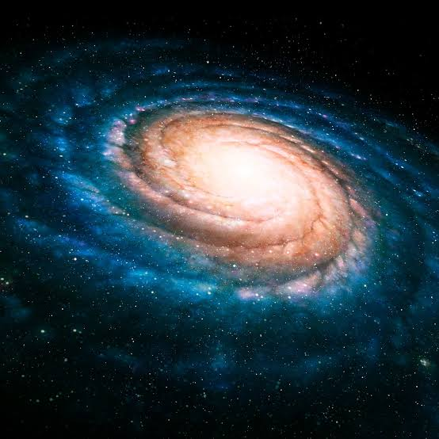
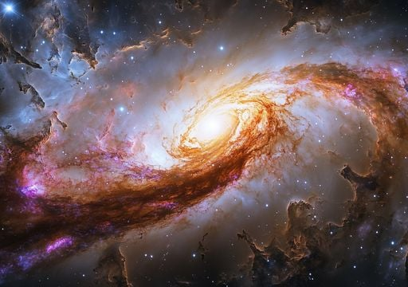

Descubre la diversidad de galaxias que existen en el universo y aprende a reconocer sus principales formas.
Introducción
Las galaxias son enormes sistemas formados por estrellas, planetas, gas, polvo cósmico y materia oscura, unidos principalmente por la gravedad. Existen diferentes tipos de galaxias y cada una presenta características y formas particulares.
Estudiar las galaxias es importante porque permite comprender mejor la estructura y evolución del universo. También nos ayuda a conocer cómo se distribuyen las estrellas y otros objetos en el espacio y a entender el lugar que ocupa nuestra galaxia, la Vía Láctea.
En este sitio el visitante encontrará información sobre qué son las galaxias, cómo se clasifican y cuáles son las principales características de las galaxias espirales, elípticas e irregulares.
Objetivos
Objetivo general
Explicar las características y principales clasificaciones de las galaxias para que los visitantes comprendan la diversidad de estructuras que existen en el universo.
Objetivos específicos
Describir qué son las galaxias y cuáles son sus principales componentes.
Explicar las características de las galaxias espirales, elípticas e irregulares.
Relacionar las diferentes clasificaciones de galaxias con ejemplos observables en el universo.
Marco teórico
1. ¿Qué son las galaxias?
Las galaxias son grandes agrupaciones de estrellas, planetas, gas, polvo y materia oscura que permanecen unidas principalmente por la gravedad. Pueden tener diferentes tamaños y formas y contienen desde millones hasta cientos de miles de millones de estrellas. Nuestro sistema solar pertenece a la galaxia llamada Vía Láctea.

Figura 1. Representación de una galaxia y sus componentes.
2. Clasificación de las galaxias
Las galaxias pueden clasificarse principalmente según su forma. Las categorías más conocidas son las galaxias espirales, elípticas e irregulares. Las galaxias espirales tienen brazos que se extienden desde una región central; las elípticas presentan formas redondeadas u ovaladas; y las irregulares no poseen una estructura definida.
≈ 100.000 años luz
La Vía Láctea tiene aproximadamente 100.000 años luz de diámetro.
3. Principales tipos de galaxias
Galaxias espirales: poseen un disco y brazos en forma de espiral. Suelen contener gas y polvo, además de estrellas jóvenes. La Vía Láctea es una galaxia espiral barrada.
Galaxias elípticas: tienen formas redondeadas u ovaladas y no presentan brazos espirales definidos. Generalmente poseen una gran cantidad de estrellas antiguas y poco gas y polvo en comparación con las galaxias espirales.
Galaxias irregulares: no presentan una forma definida. Algunas pueden adquirir esta apariencia debido a interacciones gravitacionales o encuentros con otras galaxias.

Figura 2. Ejemplos de galaxias espirales, elípticas e irregulares.
Nuestro stand durante la presentación del proyecto final
Nuestro stand permitirá a los visitantes conocer los principales tipos de galaxias mediante imágenes, explicaciones y representaciones visuales. Los visitantes podrán comparar las formas de las galaxias espirales, elípticas e irregulares y aprender las características que permiten diferenciarlas.
El experimento físico muestra
El sitio web muestra
Una representación visual de las diferentes formas de las galaxias.
La explicación de qué son las galaxias y cómo se clasifican.
La comparación entre las formas espirales, elípticas e irregulares.
Las características y ejemplos de cada tipo de galaxia.